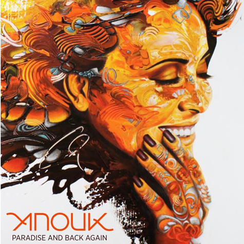

Anouk - Paradise And Back Again
Geplaatst door: Brit_89 op Oktober 1, 2014
Genre: pop
De carrière van Anouk kent vele pieken en dalen. Zo werd haar deelname aan het Eurosongfestival een groot succes, terwijl ze later dat jaar veel kritiek kreeg toen ze zich mengde in de zwarte pieten discussie (dat heeft nu het mooie Breathe opgeleverd) en de Symphonica In Rosso concerten ook niet vlekkeloos verliepen. Gelukkig stelt Anouk op plaat nooit teleur. Waren haar singles afgelopen jaar uitstapjes richting dans (You And I nam ze op met Afrojack en Feet On The Ground met Nicky Romero) misschien vreemde eenden in haar oeuvre, Anouk heeft zich nooit op slechts een stijl willen toeleggen. Zo laat Anouk opnieuw een andere kant van haar zelf zien in Places To Go, dat wordt gekenmerkt door jaren 80 synthesizers. Deze drie singles zijn als bonustracks aan het album toegevoegd. Paradise And Back Again is net zo veelkleurig als de adembenemend mooie hoes die er omheen zit (geschilderd door kunstenares Esther Barend).
Paradise And Back Again is net zo veelkleurig als de adembenemend mooie hoes die er omheen zit (geschilderd door kunstenares Esther Barend).
Duidelijk gaan haar teksten over persoonlijke zaken. Luister maar She’s Beautiful, Daddy en Cold Blackhearted Golddiggers. Waarover Wish He Could See It All gaat, laat zich makkelijk raden. Een van de hoogtepunten van het album is Looking For Love, waarin Anouk haar hart uitstort over wat ze nog altijd mist in haar leven. Ondanks het ontbreken van een overkoepelend thema, is het een erg sterk album geworden. Met Paradise And Back Again heeft Nederlands beste zangeres opnieuw een openhartig en goudeerlijk album gemaakt
Tracklist:
- Cold Blackhearted Golddiggers
- She Is Beautiful
- Daddy
- Don't Wipe Us Out
- Looking For Love
- Last Goodbye
- Some Of Us
- Wigger
- Breathe
- Smile & Shine
- Wish He Could See It All
- Places To Go
- You & I
- Feet On The Ground